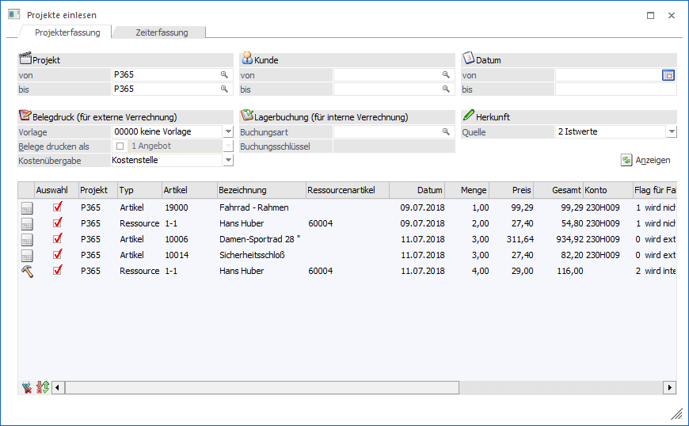
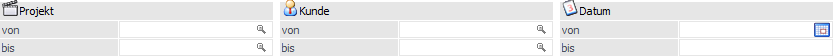
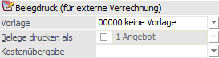
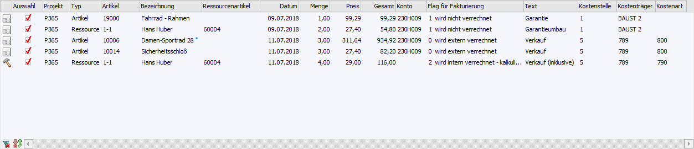

In dem Register "Projekterfassung" können Erfassungszeilen aus der Projekterfassung in einen Beleg übergeben bzw. Artikel vom Lager abgebucht werden.

Folgende Selektionen und Einstellungen stehen zur Verfügung:
Selektion

Ø Projekt von / bis
An dieser Stelle kann eine Einschränkung mit Hilfe der Projektnummer vorgenommen werden.
Ø Kunde von / bis
Hier kann auf das Personenkonto des Projekts selektiert werden.
Ø Datum von / bis
Mit Hilfe dieser Eingabefelder kann eine Selektion auf das Datum der Projekterfassung vorgenommen werden.
Belegdruck (für externe Verrechnung)

Handelt es sich um Projekterfassungszeilen des Typs " 0 - wird extern verrechnet" oder "1 - wird intern verrechnet" so werden diese in einen Beleg umgewandelt. Um was für einen Art von Beleg es sich dabei handelt, ob dieser gleich gedruckt werden soll und ob Daten der Kostenrechnung auch übergeben werden sollen, kann in den nachfolgenden Feldern definiert werden.
Hinweis
Die Einstellungen "Belege drucken als" und "Kostenübergabe" werden benutzerspezifisch gespeichert.
Ø Vorlage
An dieser Stelle kann eine Export-/Import-Vorlage des Typs "Belege" für die Erzeugung des Belegs bzw. der Belege hinterlegt werden. Standardmäßig wird hierbei jene vorgeschlagen, welche in den "Vorlagen - Parametern" (WinLine START - Vorlagen - Vorlagen - Parameter - Register "Standard-Vorlagen (EXIM)" - Vorlagentyp "Belege") zugeordnet wurde. Mit Hilfe dieser Vorlagen können Felder wie z.B. der Druckstatus oder auch die Belegart vorbelegt werden.
Ø Belege drucken als
Durch Aktivierung der Option "Belege drucken als" kann der Beleg bzw. die Belege nach dem Erstellen gleich gerechnet und gedruckt werden. Die gewünschte Belegstufe kann hierbei aus der Auswahlliste gewählt werden.
Hinweis
Damit der Beleg wirklich in der ausgewählten Belegstufe gedruckt werden kann, muss der Druckstatus über die Vorlage (bzw. die Belegart) entsprechend gesetzt werden!
Beispiel
Es soll automatisch eine Faktura gedruckt werden. Hierfür muss der Druckstatus für Lieferscheine auf "N - Nicht bearbeiten" und der Druckstatus für Fakturen auf "A - Automatisch" gesetzt werden (z.B. über die Vorlage).
Ø Kostenübergabe
An dieser Stelle kann mit Hilfe einer Mehrfachauswahloption definiert werden, ob bzw. welche Daten der Kostenrechnung in die Belegzeilen (nicht Belegkopf) übergeben werden sollen. Folgende Einträge stehen zur Verfügung:
ü Kostenstelle
Es wird die
Kostenstelle aus der Projekterfassungszeile in die Belegzeile des Artikels
übergeben.
ü Kostenträger
Es wird der
Kostenträger aus der Projekterfassungszeile in die Belegzeile des Artikels
übergeben.
ü Kostenart
Diese Auswahl steht
nur zur Verfügung, wenn in den FAKT-Parametern die Option "Kostenart eingeben"
aktiviert wurde. Durch Aktivierung von "Kostenart" wird die Kostenart aus der
Projekterfassung in die Belegzeile des Artikels übergeben.
Achtung
Wenn bei dem Sachkonto der Belegzeile keine Kostenart hinterlegt ist, so kann die Kostenart aus der Projekterfassung nicht übergeben werden.
Hinweis
Folgende Besonderheiten sind zu beachten:
ü Sollten in den Erfassungszeilen
der Projekterfassung keine Eingaben getätigt worden sein (d.h. die Felder sind
leer) und eine Übergabe soll gemäß der Option "Kostenübergabe" erfolgen, so wird
die Übergabe entsprechend erfolgen (d.h. der Inhalt des Felds in der Belegzeile
ist leer).
Dieses Betrifft auch die Kostenart, obwohl dieses in der manuellen
Belegerfassung nicht möglich wäre!
ü Wenn die Option "Kostenübergabe" für bestimmte Elemente nicht aktiviert wurde, so erfolgt die Übergabe für jene gemäß Standardübergabe (d.h. die Daten stammen aus der Belegart bzw. der Vorlage).
Lagerbuchung (für interne Verrechnung)

Handelt es sich um Projekterfassungszeilen des Typs "2 - wird intern verrechnet - kalkulierter Aufwand" oder "3 - wird intern verrechnet - außerordentlicher Aufwand" so können für diese Lagerbuchungen erzeugt werden.
Hinweis
Wenn bei Erstellung der Lagerbuchung (Bereich "Lagerbuchung (für interne Verrechnung)") ein Problem auftritt, so wird der entsprechende Hinweis unterhalb der Tabelle "Projekterfassung" dargestellt.
Ø Buchungsart
An dieser Stelle wird die Lagerbuchungsart für die internen Istwerte eingegeben. Es sind hierbei nur Buchungsarten mit den Buchungsschlüsseln "Verkauf" oder "Produktion" erlaubt.
Hinweis
Wird keine Lagerbuchungsart angegeben, so könnten die Erfassungszeilen zwar übernommen, aber nicht vom Lager abgebucht, werden.
Ø Buchungsschlüssel
Hier wird der Buchungsschlüssel der gewählten Buchungsart angezeigt.
Herkunft
Ø Quelle
Mit Hilfe der Einstellung "Quelle" kann definiert werden, ob Erfassungszeilen der Art "1 - Budgetwerte" oder "2 - Istwerte" in der Tabelle dargestellt werden sollen. Die hier getroffene Auswahl wird benutzerspezifisch gespeichert.
Anzeigen

Ø Anzeige
Durch Anwahl des Buttons "Anzeigen" wird die Tabelle "Projekterfassungen" gemäß der zuvor getroffenen Selektion gefüllt.
Tabelle "Projekterfassung"

In der Tabelle werden nach Anwahl des Buttons "Anzeigen" alle Projekterfassungen, gemäß der zuvor getroffenen Selektion, angezeigt. Innerhalb der Tabelle stehen folgende Einstellungen zur Verfügung bzw. werden folgende Informationen angezeigt:
Ø Zeilen-Typ
An dieser Stelle wird in Form eines Icons angezeigt, ob für die Erfassungszeile ein Beleg oder einer Lagerbuchung erstellt werden kann (siehe auch Spalte "Flag für Fakturierung").
ü  - Beleg
- Beleg
ü - Lagerbuchung
Ø Auswahl
An dieser Stelle kann entschieden werden, ob für die Erfassungszeile ein Beleg oder eine Lagerbuchung erzeugt werden soll.
Ø Projekt / Typ / Artikel / Bezeichnung / Datum / Menge / Preis / Gesamt / Text
In diesen Spalten werden die Daten der Projekterfassung ausgewiesen, wobei die Daten nicht editiert werden können.
Hinweis
Bei der Erstellung von Belegen wird der "Text" in das Notizfeld der Position übergeben. Bei einer Lagerbuchung in das Textfeld der Buchungszeile.
Ø Ressourcenartikel
Handelt es sich bei der gewählten Zeile um eine Ressource, so kann hier ein Artikel eingetragen werden, mit dem die Verrechnung der Ressource am Beleg erfolgt soll.
Hinweis
Der Ressourcenartikel kann im Ressourcenstamm der Produktion hinterlegt werden und wird dann hier automatisch vorgeschlagen.
Ø Konto
Hier wird das Konto aus dem jeweiligen Projekt dargestellt und kann geändert werden. Sollte ein Beleg erstellt werden, so wird dieses Konto für diese Belegerzeugung verwendet.
Ø Flag für Fakturierung
An dieser Stelle wird der Abrechnungstyp der Zeile dargestellt, wobei die Zuordnung bereits in der Projekterfassung getroffen wurde. Folgende Varianten stehen zur Verfügung:
ü 0 - wird extern verrechnet
Die
Erfassungszeile wird mit Menge, Preis, Datum und Text (wenn vorhanden) in einen
Beleg übergeben.
ü 1 - wird intern verrechnet
Die
Erfassungszeile wird mit Menge, Preis "0,00", Datum und Text (wenn vorhanden) in
einen Beleg übergeben.
ü 2 - wird intern verrechnet -
kalkulierter Aufwand
Für die Erfassungszeile kann eine Lagerbuchung
vorgenommen werden.
ü 3 - wird intern verrechnet -
außerordentlicher Aufwand
Für die Erfassungszeile kann eine Lagerbuchung
vorgenommen werden.
Ø Kostenstelle / Kostenträger / Kostenart
An dieser Stelle werden die Daten der Kostenrechnung angezeigt und können editiert werden. Die Spalte "Kostenart" steht nur zur Verfügung, wenn in den FAKT-Parametern die Option "Kostenart eingeben" aktiviert wurde.
Tabellenbutton

Ø Alle Zeilen markieren
Mit Hilfe des Buttons "Alle Zeilen markieren" wird bei allen Erfassungszeilen die Option "Auswahl" aktiviert.
Ø Selektion umkehren
Durch Anwahl des Buttons "Selektion umkehren" werden die selektierten Projekterfassungen deaktiviert und die nicht selektierten Erfassungen aktiviert.
Ø Ausgabe Excel
Durch Anwahl des Buttons "Ausgabe Excel" wird der Inhalt der Tabelle an Microsoft Excel übergeben.
Ø Tabelleneinstellungen speichern
Die Spalten einer Tabelle können grundsätzlich an beliebige Positionen verschoben, bzw. in der Breite entsprechend angepasst werden. Durch Anwahl des Buttons "Tabelleneinstellungen speichern" werden die Einstellungen benutzerspezifisch gespeichert und bei dem nächsten Aufruf des Programmpunktes wieder vorgeschlagen.
Ø Gesamteinstellungen speichern
Im Gegensatz zu "Tabelleneinstellungen speichern" können mit "Gesamteinstellungen speichern" mehrere Tabellenaufbauten gespeichert und nach Wunsch geladen werden. Zusätzlich werden Sonderfunktionen der Tabelle (z.B. "Spalte gruppieren") ebenfalls bei der Speicherung bedacht.